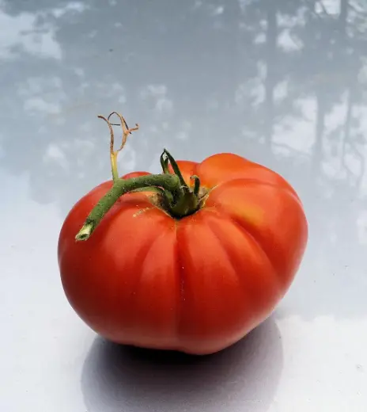
Big Beef
Red beefsteak
Big, ribbed red beefsteak with full, balanced tomato flavor and soft flesh.
Feroleto Garden Co.
Everything I am growing for the 2027 season: 142 varieties of vegetables, herbs, fruit and flowers. Choose what you would like in your garden and I will plan your beds around it.
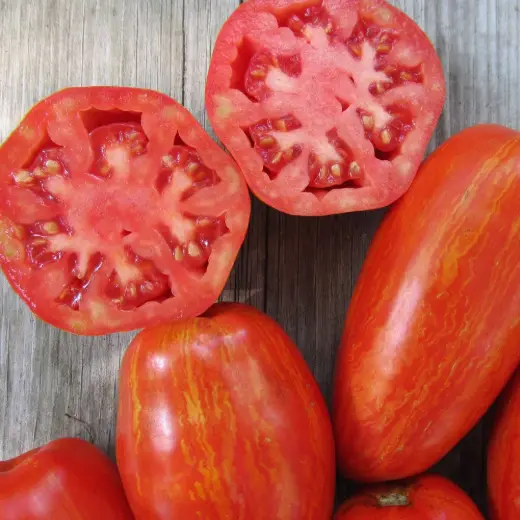
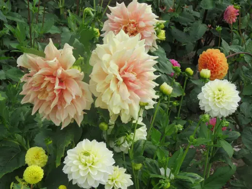
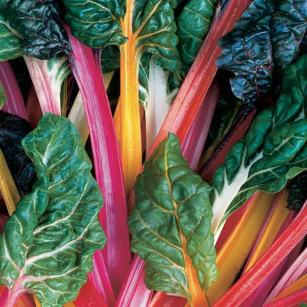
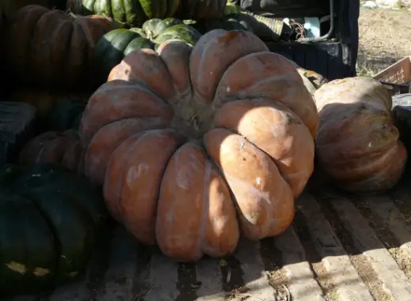
12 varieties

Red beefsteak
Big, ribbed red beefsteak with full, balanced tomato flavor and soft flesh.
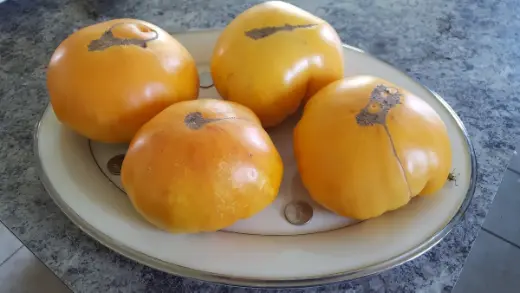
Yellow-orange beefsteak
Huge deep-orange heirloom beefsteak, sweet with a balanced, true tomato flavor.
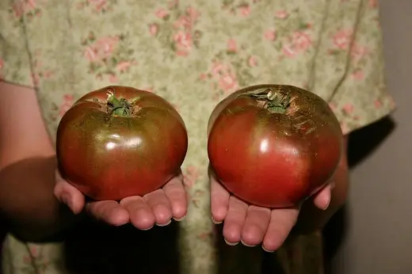
Dark beefsteak
Dusky rose-brown beefsteak with green shoulders and rich, sweet, smoky flavor.
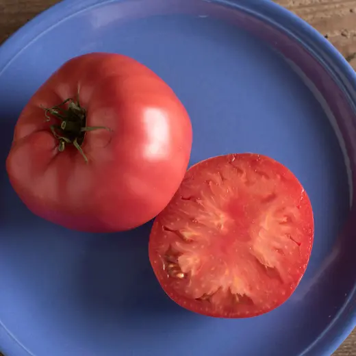
Pink beefsteak
The classic pink heirloom, often over a pound, with deep, old-fashioned tomato flavor.
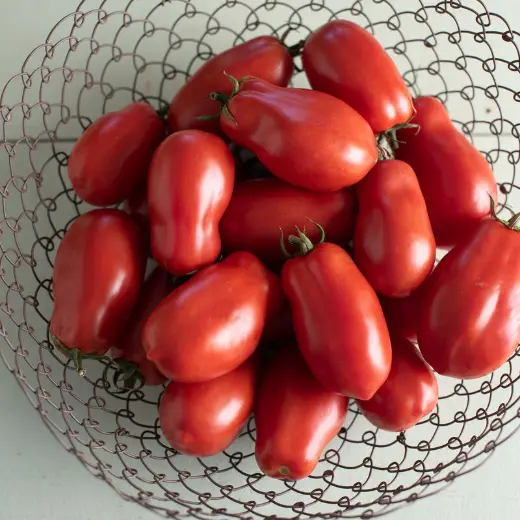
Paste
The Italian plum tomato for sauce, dry and meaty with few seeds.
Striped paste
A meaty paste tomato streaked red and gold, with a bright, tangy flavor.
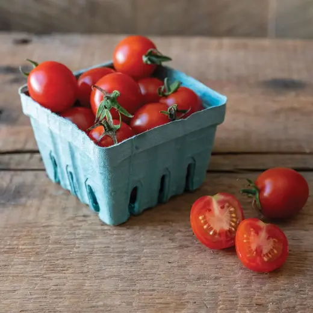
Red cherry
Deep red cherry, very sweet, with a fruity, floral note.
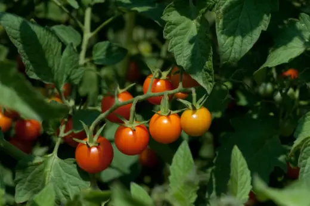
Orange cherry
Orange cherry with candy-like sweetness and a tropical, fruity depth.
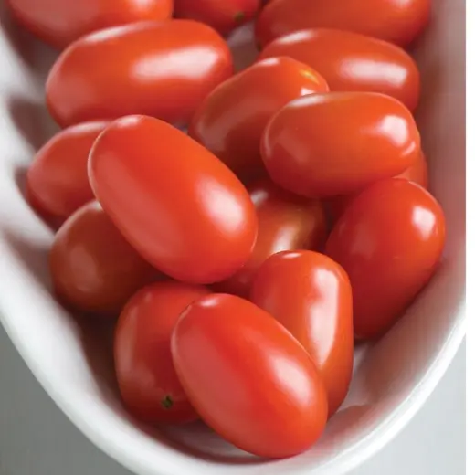
Grape
Firm red grape tomato with real tomato flavor beneath the sweetness.
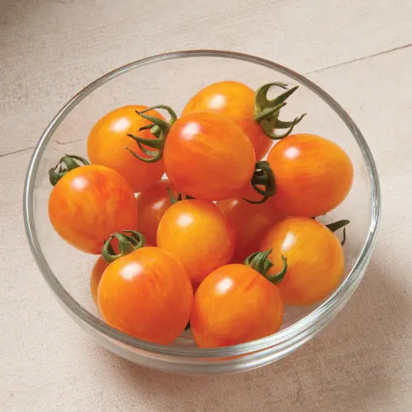
Striped cherry
Golden cherry streaked with red inside and out, sweet and mild.
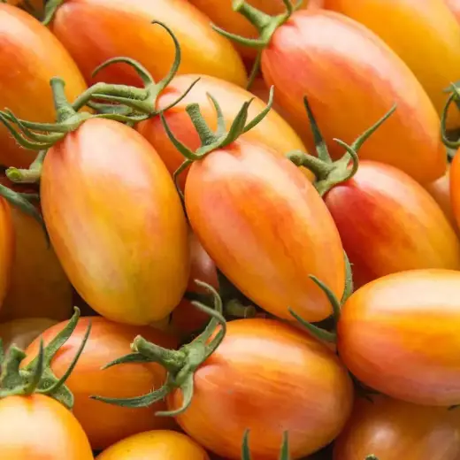
Elongated striped cherry
Elongated yellow cherry with a pink blush, sweet-tart and striking.
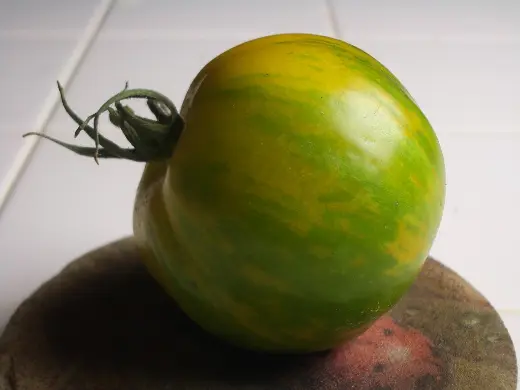
Green slicer
A green-striped slicer that stays green when ripe, bright and tangy.
8 varieties
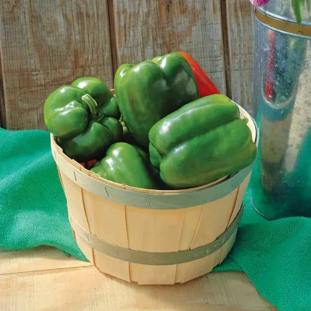
Red bell
Big, blocky, thick-walled bell that ripens from green to a sweet, deep red.
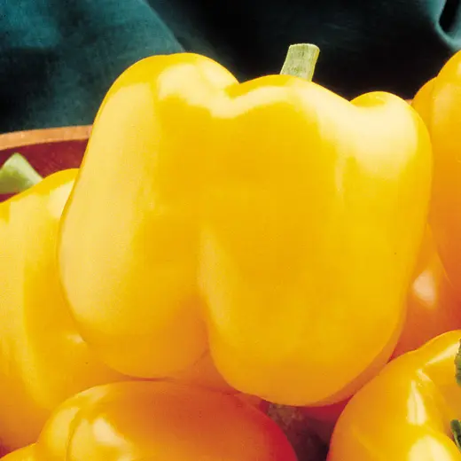
Yellow bell
Extra-large, bright yellow bell with sweet, crisp walls.
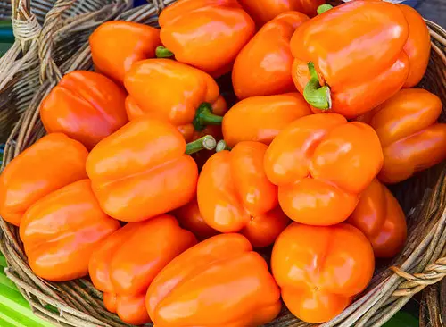
Orange bell
Bright orange bell with sweet, fruity flesh, borne heavily on vigorous plants.
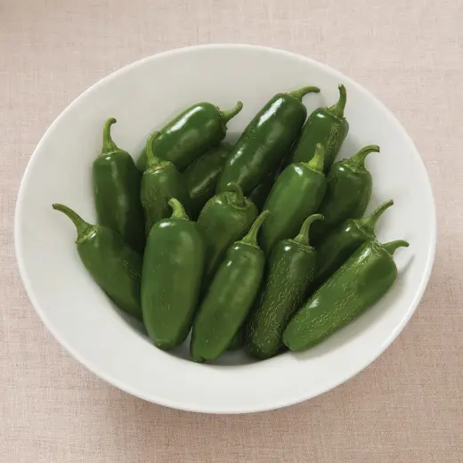
Jalapeño
Classic jalapeño heat and flavor, ready earlier in the summer.
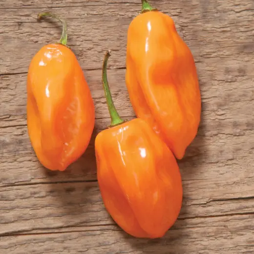
Habanero
Fruity and floral under serious heat; a plant or two goes a long way.
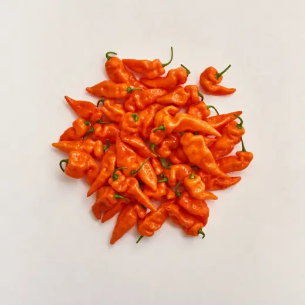
Heatless habanero
All of the habanero's floral, tropical fruitiness with none of the heat.
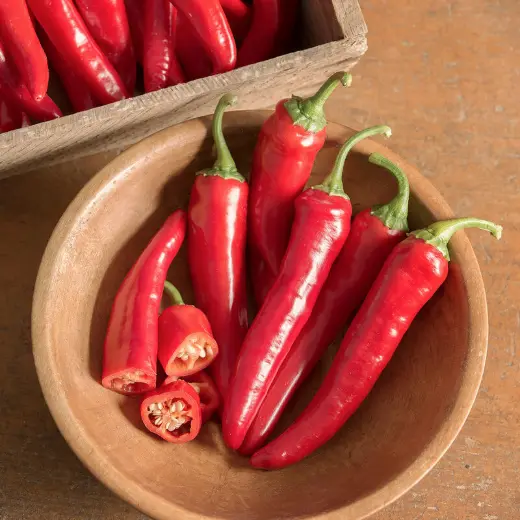
Cayenne
A slender red cayenne with warm, full flavor behind the heat, for cooking, drying and hot sauce.
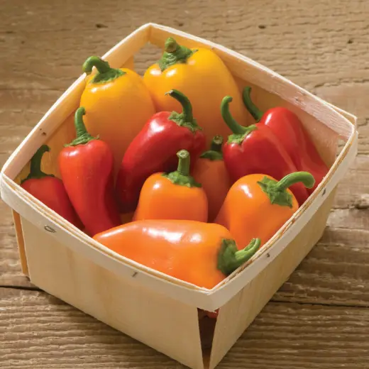
Snacking peppers
Mini sweet peppers in red, orange and yellow, crunchy and sweet enough to eat like fruit.
2 varieties
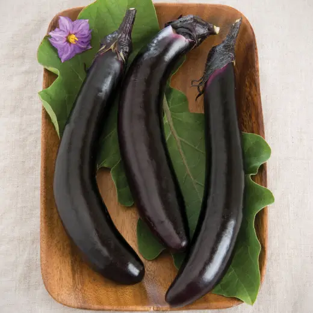
Asian eggplant
Long, glossy, dark-purple fruit with tender skin and mild, creamy flesh.
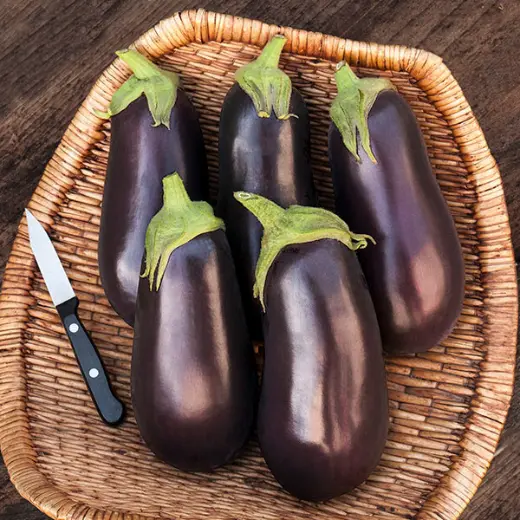
Italian eggplant
The classic glossy black, bell-shaped Italian eggplant with firm, creamy flesh.
5 varieties
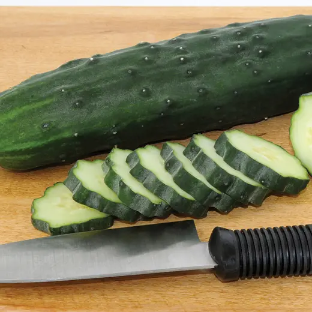
Slicing cucumber
A dependable dark-green slicer, crisp, cool and mild.
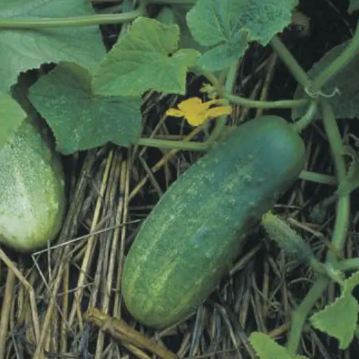
Pickling cucumber
Short, blocky pickler that stays firm and crunchy in the brine.
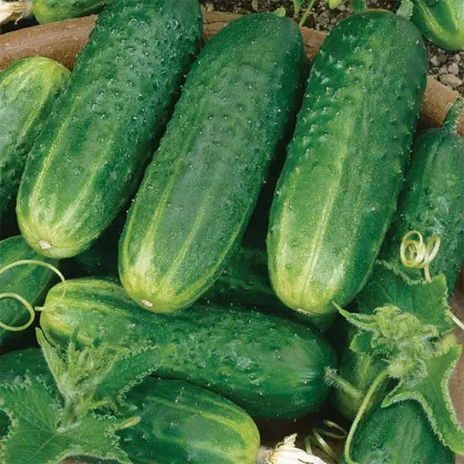
Pickling cucumber
Crisp, small-seeded pickler that is just as good sliced fresh.
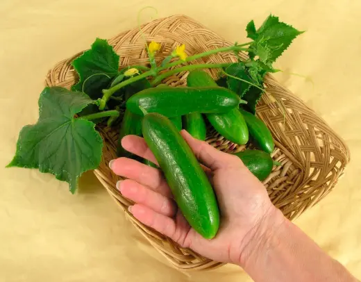
Persian cucumber
Thin-skinned baby cucumber, crisp and sweet for eating out of hand.
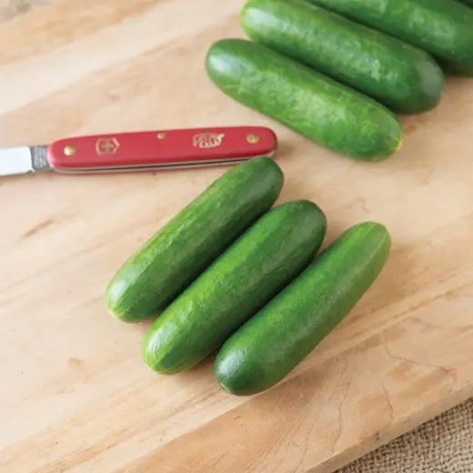
Cocktail cucumber
Seedless, thin-skinned little cucumber, crisp and tidy for snacking and lunchboxes.
3 varieties
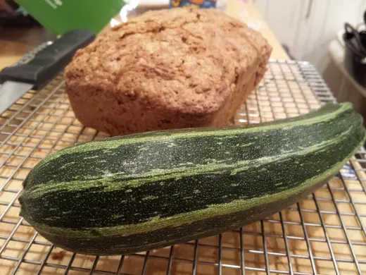
Ribbed zucchini
Italian heirloom zucchini with firm, nutty flesh that stays good even when picked large.
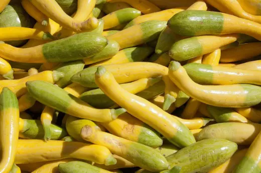
Yellow summer squash
Yellow squash with a pale-green tip and a nutty bite, best picked small.
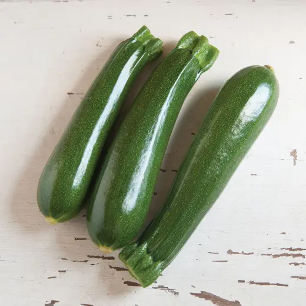
Green zucchini
Glossy, dark-green zucchini with tender, mild flesh all season long.
11 varieties
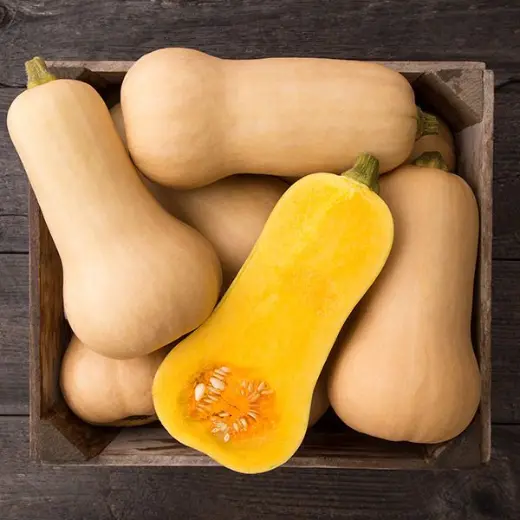
Butternut
The classic butternut, sweet and smooth-textured, that keeps for months.
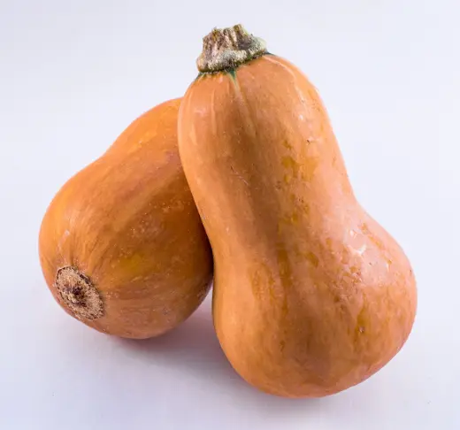
Mini butternut
A small butternut with deep-orange flesh and concentrated, honeyed sweetness.
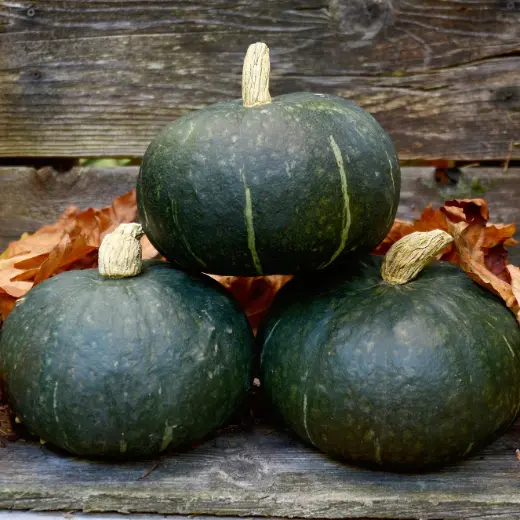
Kabocha
Green kabocha with dense, dry flesh that roasts up chestnut-sweet.
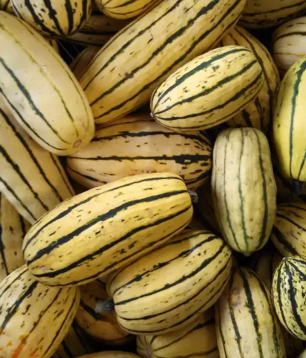
Delicata
Striped oblong squash with sweet, nutty flesh and a skin tender enough to eat.
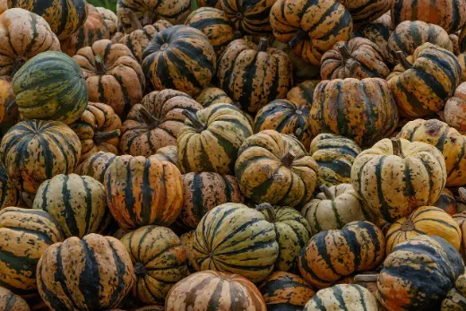
Dumpling squash
Single-serving striped squash with sweet, tender flesh, handsome on the fall table.
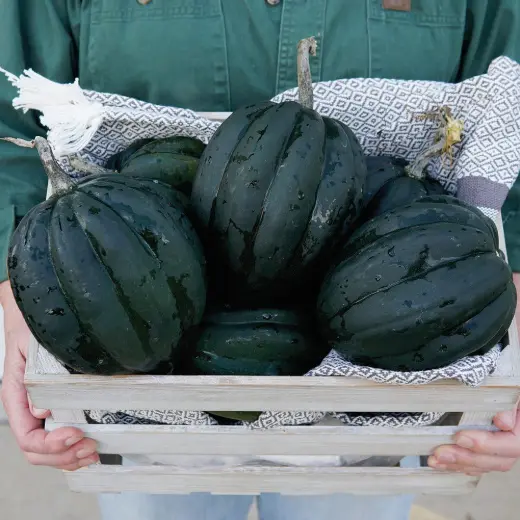
Acorn
Dark-green acorn squash with sweet, nutty, fine-grained flesh.
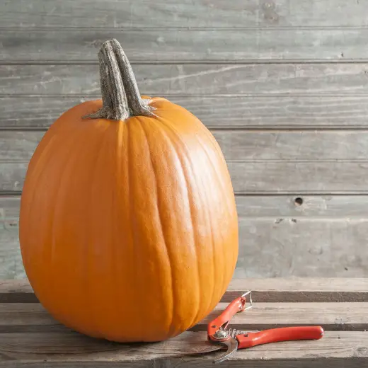
Carving pumpkin
The classic jack-o'-lantern: big, round and deep orange.
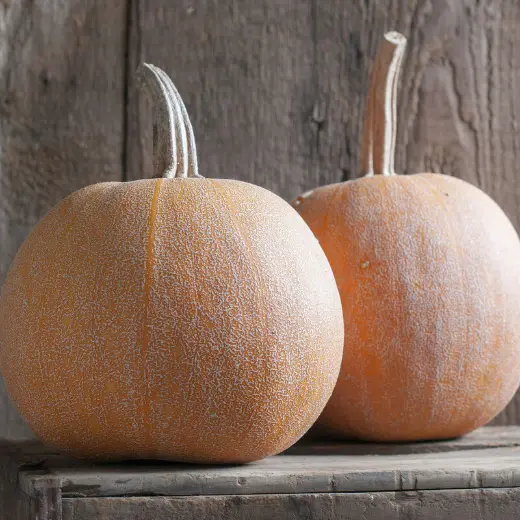
Pie pumpkin
Heirloom pie pumpkin with a lacy, netted rind and silky, sweet flesh.
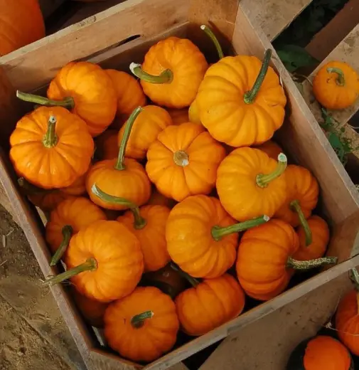
Mini pumpkin
Palm-size orange pumpkins for tabletops, mantels and windowsills.
French cheese pumpkin
Deeply ribbed pumpkin that ripens from green to copper, with sweet, deep-orange flesh.
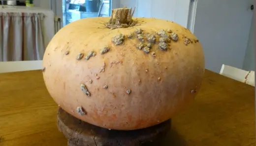
French heirloom pumpkin
Salmon-pink pumpkin crusted with peanut-like warts, with sweet, moist flesh for soup and pie.
2 varieties
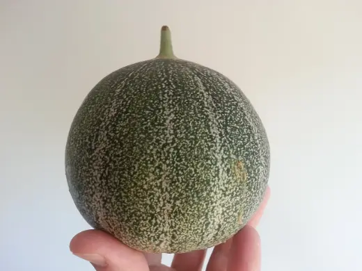
French cantaloupe
Small Breton heirloom with dense orange flesh and a honeyed, brown-sugar perfume.
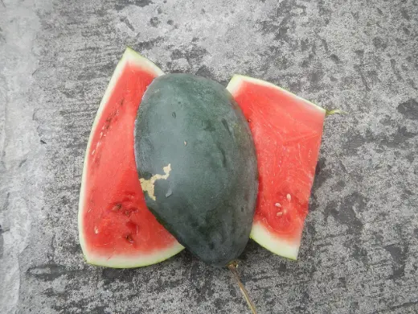
Icebox watermelon
Small, dark-rinded watermelon with crisp, sweet red flesh, sized to fit the fridge.
3 varieties
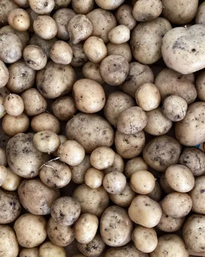
White potato
Thin-skinned white creamer with rich flavor and no need to peel.
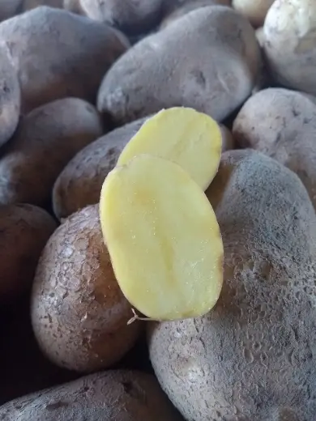
Yellow potato
Golden potato with rich, buttery flesh, good any way you cook it.
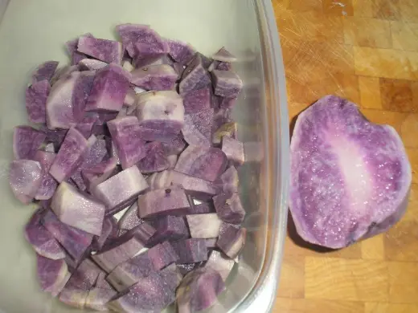
Purple potato
Purple skin and purple flesh that holds its color in the pot.
6 varieties
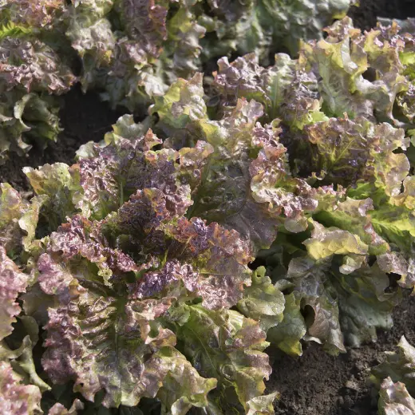
Red leaf
Large, ruffled heads of burgundy-edged leaves, tender and mild.
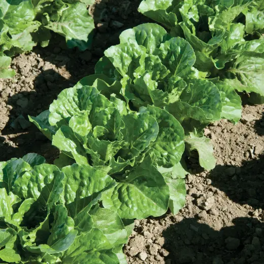
Romaine
Tall, dark-green romaine with crisp, sweet hearts for salads and grilling.
Green leaf
Big, bright-green heads of tender, sweet leaves that carry through summer.
Salad mix
Compact red and green heads that fall into bite-size, full-flavored leaves with one cut.
Summer crisp
Heat-tolerant Batavian lettuce with crisp, sweet, juicy leaves.
Mini romaine
Compact romaine with dense, sweet hearts, perfect for salads or grilled halves.
9 varieties
Spinach
Deeply crinkled, dark-green spinach with rich, sweet flavor.
Spinach
Smooth, tender, dark-green leaves, mild and good raw or wilted.
Arugula
Mild, tender arugula with a gentle peppery bite.
Swiss chard
Rainbow chard with stems of red, gold, pink, orange and white, mild and tender.
Mâche
Tender, glossy rosettes of corn salad with a mild, nutty flavor.
Escarole
Full-hearted escarole with sweet, crisp inner leaves and a pleasant bitter edge.
Chioggia radicchio
Round, deep-red heads with white ribs and a crisp, bittersweet bite.
Variegated radicchio
Cream-colored heads splashed with rose, crisp and gently bitter.
Pink radicchio
Loose, pillowy heads of soft rose-pink leaves, milder than the red radicchios.
14 varieties
Broccoli
Domed blue-green heads, followed by plenty of tender side shoots.
Cauliflower
Early white cauliflower with dense, mild, sweet heads.
Sprouting cauliflower
Loose white florets on long, sweet, tender green stems.
Sprouting broccoli
Slender stems topped with small florets, sweet and tender from tip to base.
Green cabbage
Quick, round green cabbage with crisp, sweet leaves for slaw and salads.
Storage cabbage
Dense green cabbage that keeps well into winter.
Red cabbage
Deep red-purple heads, crisp and peppery-sweet, for slaw and braising.
Savoy cabbage
Crinkled, deep-green savoy with tender, sweet leaves for slaw and cooking.
Napa cabbage
Tall, pale-green heads with crisp, mild, juicy leaves.
Bok choy
Thick white stems and dark-green leaves, crisp and juicy, for stir-fries and soups.
Curly kale
Tightly frilled, blue-green kale that grows sweeter after frost.
Lacinato kale
Dark, pebbled dinosaur kale with a deep, earthy sweetness.
Russian kale
Flat, oak-shaped leaves on purple stems, tender and sweet.
Collards
Savoyed, loose-heading collards with rich, mellow flavor.
5 varieties
Bush bean
Round, medium-green snap beans with classic, beany flavor.
Bush bean
Long, slim, deep-green snap beans that stay tender and sweet.
Filet bean
Slender French haricots verts, delicate and tender.
Snow pea
Flat snow pea pods, sweet and crunchy even at full size.
Snap pea
The original snap pea: plump, juicy pods with outstanding sweetness.
3 varieties
Orange carrot
Smooth, early orange carrot, sweet and crisp with a bright finish.
Purple carrot
Deep-purple carrot with a sweet, nutty flavor.
Yellow carrot
Bright yellow carrot with a sweet, fruity flavor.
4 varieties
Red beet
Deep red beet, notably sweet, with smooth, fine-textured flesh.
Striped beet
Italian heirloom with candy-striped rings of pink and white, mild and sweet.
Golden beet
Long orange-gold beet without the earthy bite, mild and sweet enough to eat raw.
Parsnip
Smooth, long white parsnips that turn sweet after frost.
6 varieties
Round radish
Bright red round radish, crisp and mildly peppery.
Breakfast radish
Elongated red radish with a white tip, crisp and mild.
Watermelon radish
Pale green outside with a magenta heart, crisp and mildly sweet.
Kohlrabi
Purple kohlrabi with crisp, juicy, mild white flesh.
Salad turnip
Sweet, tender white turnip that is delicious raw, greens and all.
Storage turnip
Classic purple-shouldered turnip for roasting, mashing and soups.
7 varieties
Yellow onion
Golden storage onion with firm, pungent flesh that keeps for months.
Red onion
Deep-red storage onion with firm rings and a full, sharp flavor.
Sweet onion
Huge, mild, sweet onion for fresh summer eating.
Shallot
Copper-skinned shallots with a delicate, sweet onion flavor.
Hardneck garlic
Big, easy-to-peel cloves with a rich, strong flavor.
Leek
Long, slender leeks with tender white shanks for fall cooking.
Scallion
Mild white scallions that winter over for the earliest spring bunches.
4 varieties
Florence fennel
Round white bulbs, crisp and lightly sweet with a gentle anise flavor.
Artichoke
Green globe artichokes with tender hearts, ready in a single season.
Celery
Tender, crisp, string-free celery with a clean, fresh flavor.
Okra
Tender, spineless green pods for frying, roasting and gumbo.
2 varieties
June-bearing
Large, glossy red berries with firm, sweet flesh in one early-summer flush.
Everbearing
Large, firm, sweet berries that keep coming from late summer into fall.
11 varieties
Genovese basil
Large, glossy leaves with the sweet, clove-like aroma pesto calls for.
Thai basil
Glossy leaves and purple flowers with a sweet licorice-anise edge.
Flat-leaf parsley
Big, dark, flat leaves with bold, fresh flavor.
Cilantro
Bright, citrusy leaves on plants that are slow to go to seed.
Dill
Feathery, aromatic dill for leaves, flower heads and seed.
Oregano
True cooking oregano with a strong, pungent, peppery flavor.
Thyme
Hardy, broad-leaf thyme with a warm, earthy flavor.
Chives
Slender hollow leaves with a mild onion flavor and edible purple blossoms.
Sage
Broad, round, silver-green leaves with a mellow, savory flavor.
Rosemary
Upright rosemary with a resinous, piney flavor and blue flowers.
Spearmint
Large-leaved spearmint with a sweet, cool flavor for drinks and cooking.
13 varieties
Large double zinnia
Big, fully double blooms on long stems in scarlet, orange, golden yellow, salmon, coral, bright pink, carmine, wine, purple, lilac, lime and white.
Antique zinnia
Zinnias in muted antique tones of dusty rose, blush, lime green and mauve.
Small double zinnia
Small, fully double zinnias in salmon, pink, scarlet, gold and white, ideal for bouquets.
Branching heirloom sunflower
Many-stemmed plants that bloom over a long season in lemon, gold, bronze and burgundy.
Branching hybrid sunflower
Bright orange-gold petals around a dark chocolate center, on many-stemmed plants that bloom for weeks.
Double cosmos
Full, ruffled cosmos in magenta, rose, white and bicolors.
Cup-shaped cosmos
Fluted, cup-shaped blooms in white and soft pink on long stems.
Snapdragon
Tall spikes in rose, orchid, bronze, gold, red and white.
Plumed celosia
Feathery plumes in bronze, salmon, orange, red and wine.
Crested celosia
Velvety, deep-burgundy crests, striking fresh or dried.
Spring cut flower
Layered, rose-like blooms on long, sturdy stems in early spring.
Spring cut flower
Poppy-like blooms with dark centers in rich jewel tones.
Nasturtium
Dwarf plants with cream-marbled leaves and peppery, edible blooms in red, orange and yellow.
12 varieties
Blush dinnerplate
Huge cream-and-blush blooms with the soft look of pastel silk.
Pink dinnerplate
Shimmering rose-pink blooms up to a foot across.
White ball
Clean, bright-white blooms on thick, sturdy stems.
Pink-to-peach ball
Opens bright pink and shifts to a soft peach blush as fall cools.
Yellow ball
Soft canary-yellow balls with a peach-pink blush on the petal tips.
Lavender ball
Soft lavender balls with a distinctive dark eye.
Red ball
Perfectly formed balls in a rich cherry red.
Bronze ball
Perfectly formed balls in a warm, heirloom-pumpkin bronze.
Coral decorative
Saturated coral-raspberry blooms, among the first dahlias to flower each season.
Purple decorative
Deep, velvety purple blooms on long stems.
Burgundy decorative
Deep burgundy-chocolate blooms with a velvety finish.
Apricot, dark foliage
Pumpkin-apricot flowers over dark bronze foliage, as handsome in the border as in a vase.